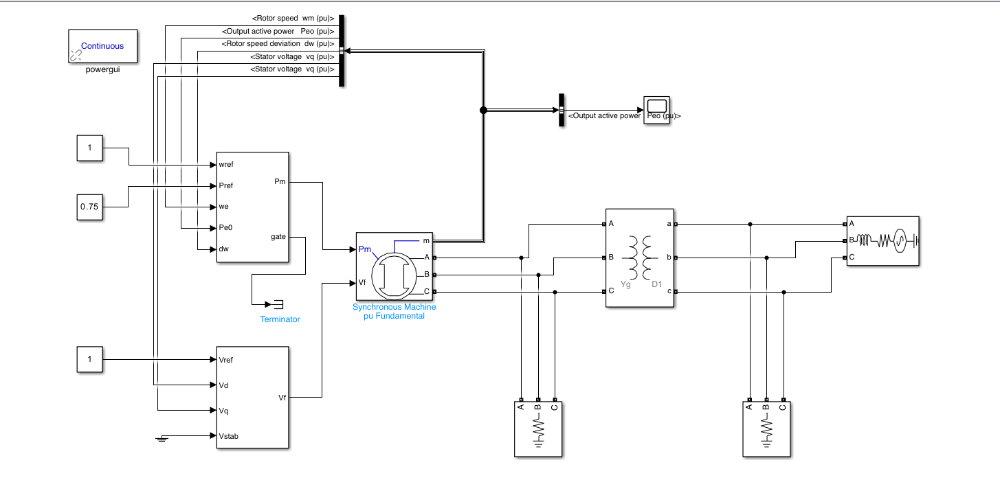
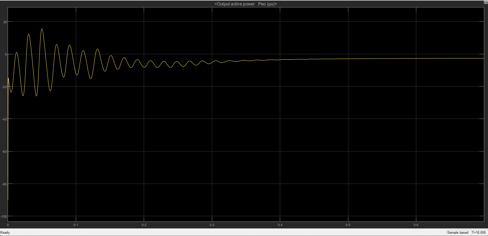

02/03/2026 (Monday)
Date
Aim / Objectives
To design and simulate a hydro electric power plant using MATLAB/Simulink.
Notation
| Notation | Description | Unit |
|---|---|---|
| V | Voltage | Voltage (V) |
| I | Current | Amperes (A) |
| p | Power | Watts (W) |
Introduction
Hydroelectric power generation is one of the most reliable renewable energy sources. It converts the potential energy of stored water into mechanical energy using turbines, which is then converted into electrical energy using a synchronous generator. In this experiment, a hydroelectric power plant is simulated using MATLAB Simulink to analyze the output power characteristics.
Apparatus
- Computer with MATLAB Simulink
Theory
In a hydroelectric power plant, water stored at a height flows through a turbine, converting potential energy into mechanical energy. This mechanical energy drives a synchronous generator to produce electrical power. The generated voltage and power depend on turbine speed, generator parameters, and load conditions. Bus selectors are used in simulation to extract specific signals such as speed and power for analysis.
Circuit Diagram

Procedure
- A new Simulink blank model was created in MATLAB.
- Required components were selected from Simulink → Simscape → Electrical → Specialized Power Systems → Fundamental Blocks.
- The simulation circuit was constructed according to the given diagram.
- In the Bus Selector block, the following signals were selected: mechanical rotor speed wm (pu), output active power Peo (pu), mechanical rotor speed deviation dw (pu), and dq0 components stator voltage vq(pu).
- Another Bus Selector block was used to extract the output active power Peo (pu) and connect it to the scope.
- In the Synchronous Machine (pu Fundamental) block, the preset model of 50 Hz, 400 V, 8.1 kVA, 1500 RPM was selected.
- In the Three-Phase Transformer block, winding-2 connection (abc terminals) was set to Delta (D1).
- In the Three-Phase Series RLC Load blocks, the nominal frequency was set to 50 Hz, and both inductive reactive power QL and capacitive reactive power QC were set to zero.
- In the Three-Phase Source block, the frequency was set to 50 Hz.
- The simulation was run and the output active power waveform was observed using the scope.
Observations

Results
The simulation of the hydro electric power plant was successfully carried out, and the output active power waveform was obtained.
Discussion
A hydroelectric power plant works by converting the potential energy of water into mechanical energy using a turbine, which then drives a synchronous generator to produce electrical energy.
The output of a hydroelectric plant is affected by factors such as water head, flow rate, turbine efficiency, generator efficiency, and load conditions.
A synchronous generator operates by rotating a magnetic field within stator windings to induce an alternating voltage.
The powergui block is used to control simulation parameters and analysis type; discrete mode is used to improve simulation accuracy and stability in digital simulations.
Conclusion
The hydro electric power plant simulation was successfully performed using MATLAB Simulink. The output active power waveform was observed, confirming proper system operation.
References
- MATLAB Simulink Documentation: https://www.mathworks.com/help/simulink/
- Hydroelectric Power Plant Simulation Guide: https://www.mathworks.com/help/physmod/sps/powersys/ref/hydro.html
- Renewable Energy Systems: https://www.sciencedirect.com/topics/engineering/hydroelectric-power-plant
- Fang, H., Chen, L., Dlakavu, N. and Shen, Z., 2008. Basic modeling and simulation tool for analysis of hydraulic transients in hydroelectric power plants. IEEE Transactions on energy conversion, 23(3), pp.834-841.
- Gao, W., Li, H., Sun, Y. and Zhang, J., 2015. Simulation of hydroelectric power plant based on MATLAB/Simulink. In 2015 International Conference on Power System Technology (POWERCON) (pp. 1-6). IEEE.
- Hossain, M.J., Pota, H.R. and Kalantar, M., 2017. Dynamic modeling and simulation of hydroelectric power plant for transient stability analysis. In 2017 IEEE Power & Energy Society General Meeting (PESGM) (pp. 1-5). IEEE.